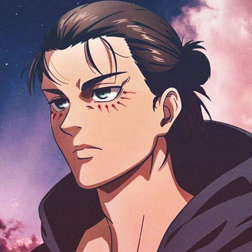
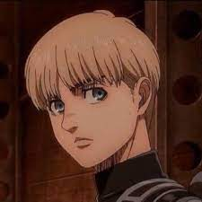
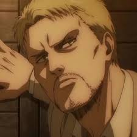
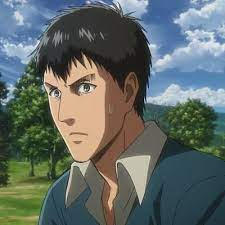
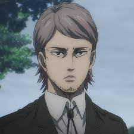
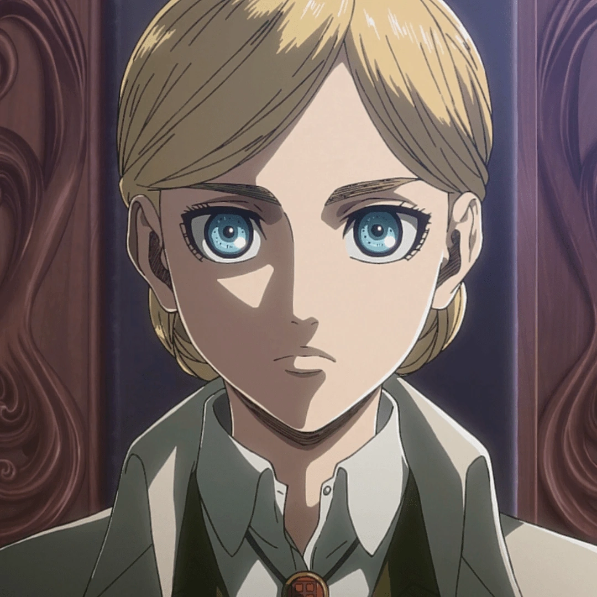
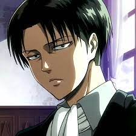
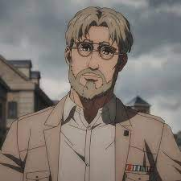

Characters
-

Eren Yeager
The main protagonist of Attack On Titan, presents himself as a passionate, impulsive, and daring young man filled with rage against Titans, human devouring beings.
-

Mikasa Ackerman
One of the two deuteragonists of the series, along with Armin Arlert. After her parents were murdered by human traffickers, Mikasa was rescued by Eren Yeager and lived with him and his parents, Grisha and Carla, before the fall of Wall Maria.
-

Armin Arlert
He is a childhood friend of Eren Yeager and Mikasa Ackerman, and one of the two deuteragonists of the series. Although he appears to be among the physically weakest of the 104th Training Corps, his intelligence and strategic genius makes him an invaluable asset, especially when paired with Hange.
-

Annie Leonhart
A skilled warrior with the ability to transform into a Titan.
-

Reiner Braun
A former member of the Scout Regiment with a hidden identity.
-

Bertolt Hoover
A member of the Warrior Unit with the power to transform into a Titan.
-

Connie Springer
A former member of the 104th Training Corps and the Scout Regiment.
-

Jean
A former member of the 104th Training Corps and a skilled soldier.
-

Sasha Braus
Known for her exceptional marksmanship and love for food.
-

Historia Reiss
The true heir to the throne with a kind and compassionate personality.
-

Levi Ackerman
Captain of the Special Operations Squad and one of humanity's strongest soldiers.
-

Erwin Smith
The former Commander of the Scout Regiment, known for his leadership.
-

Hange Zoe
The former Squad Leader of the Scout Regiment, known for their curiosity about Titans.
-

Zeke Yeager
Eren's half-brother and a key figure in the conflict between Marley and Eldia.
-

Ymir the Founder
A mysterious figure with a significant impact on the story.